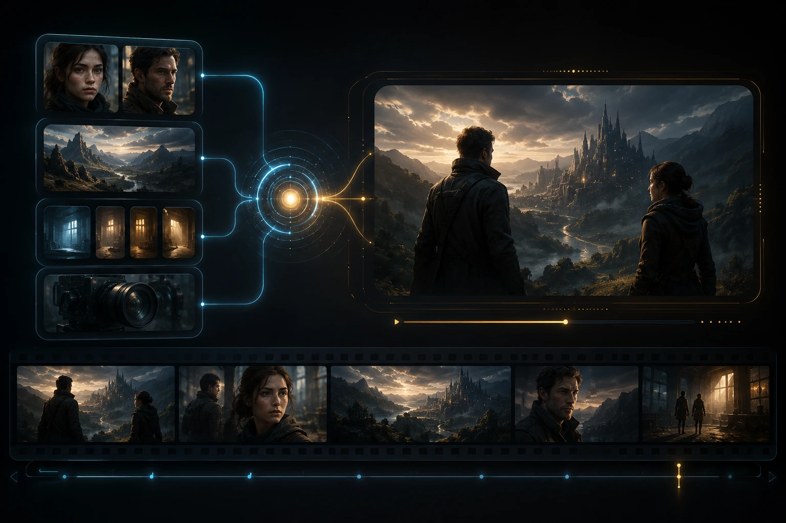

The Short Version
AI video models are getting better at producing impressive individual shots. The harder problem is turning those shots into an actual sequence without the character changing clothes, the lighting drifting, or the camera suddenly developing a mind of its own.
That is why Seedance 2.5 is interesting.
Its biggest improvements are aimed at real production problems: longer continuous clips, much stronger reference support, more control over specific parts of a scene, and a better chance of keeping everything consistent from beginning to end.
Those upgrades may not sound as flashy as another cinematic demo, but they could make Seedance 2.5 one of the most practical AI video releases of the year.
What Actually Changed
The headline feature is support for video generations lasting up to roughly 30 seconds in one continuous pass.
Most AI video tools still work best in short clips. That can be fine for a quick social post, but it becomes frustrating when you are trying to build an actual scene.
Short clips have to be extended, regenerated, or stitched together. Every new generation creates another opportunity for the character, environment, motion, or lighting to drift.
A continuous 30-second shot gives the model more room to develop an action naturally. It also gives filmmakers more freedom to create slower camera moves, longer performances, and scenes that do not feel like they are racing toward the end of a generation limit.
Seedance 2.5 is also expected to support a much larger collection of multimodal references. These can include images, video, audio, and written direction used together to guide the result.
That is potentially a huge improvement for consistency.

Why Reference Control Matters
Reference images are already a major part of my creative workflow.
When I build a cinematic shot, I may have one image for the character, another for the environment, another for the lighting, and another showing the camera composition I want.
The challenge is convincing the video model that all of those references belong together.
A model that can understand more references at once should have a better chance of preserving the important details rather than treating every input like a vague suggestion.
For filmmakers, that could mean fewer unwanted wardrobe changes, fewer disappearing props, and less visual drift during longer shots.
It may also make it easier to maintain a recognizable visual language across an entire project instead of generating every shot from scratch.
Localized Editing Could Be the Sleeper Feature
Longer generation times are getting most of the attention, but localized editing may become even more useful.
The idea is simple: change one part of the video without rebuilding the entire thing.
Maybe the character movement works, but the background needs to change. Maybe the camera is right, but one object is wrong. Maybe the final few seconds need a different action.
Right now, correcting a small mistake often means regenerating the whole shot and hoping the parts that already worked somehow survive.
Localized editing could make AI video feel more like a normal production tool. Instead of gambling on another complete generation, creators could make targeted revisions and gradually improve the shot.
That is a much healthier workflow than repeatedly pressing generate and bargaining with the machine gods.
How This Could Fit Into The Orb
For a project like The Orb, the first thing I would test is whether Seedance 2.5 can hold a character and environment together during a longer cinematic camera move.
The Orb relies on slow pushes, tracking shots, controlled movement, and atmosphere. Those shots are difficult to create when the model only has a few seconds to establish the scene and complete the action.
Longer generations could allow the camera to breathe.
Better reference support could help keep the Traveler, the horse, and the world consistent.
Localized editing could make it possible to repair a bad moment without sacrificing the rest of a successful shot.
That combination would be far more valuable to me than simply generating a sharper image.
You can see how these tools are currently being used in the series on The Orb Story The Orb Story.
The Orb Story.
What Still Needs to Be Tested
Announcements are easy. Real production is where the truth shows up.
The first question is whether the model can genuinely maintain consistency through a full 30-second scene. Longer clips are only useful when the final ten seconds still resemble the first ten.
Camera control will also matter. A beautiful shot is not very useful when the camera moves in the opposite direction or invents a dramatic orbit nobody requested.
The editing tools will need to be tested as well. Localized editing sounds great, but it needs to preserve the untouched parts of the video reliably.
Access and pricing may be another factor. A powerful model does not immediately become a useful creative tool if it remains difficult to access or too expensive for regular experimentation.
Final Thoughts
Seedance 2.5 appears to be moving AI video in the right direction.
The next major leap will not come from making another six-second clip look slightly prettier. It will come from making the entire filmmaking process more controllable, repeatable, and practical.
Longer shots, stronger references, and targeted editing all address problems creators are dealing with right now.
If Seedance 2.5 delivers on those ideas, it could become much more than another AI video generator.
It could become a real production tool.